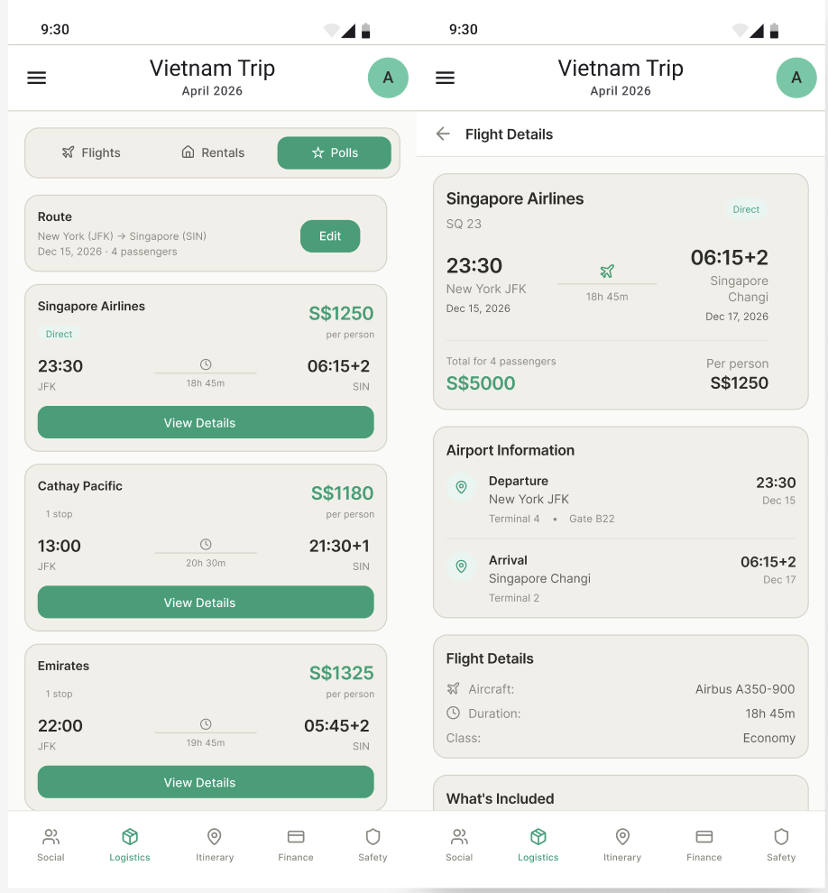
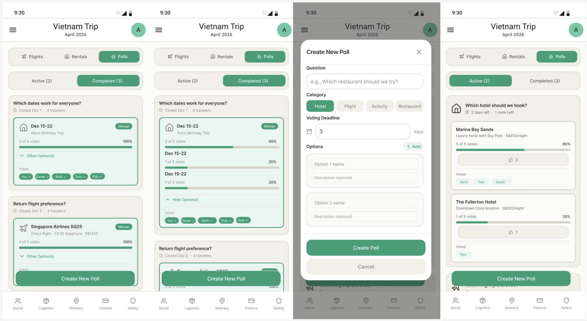
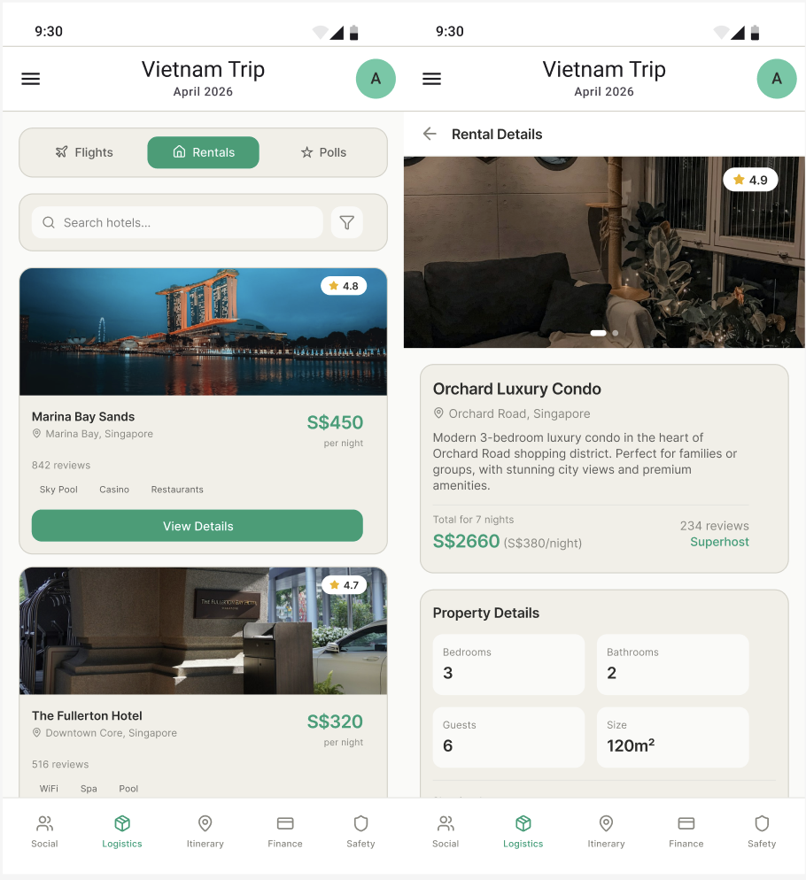

Eliminating the chaos of coordinating student group travel — from the first search to a confirmed booking everyone agreed on.
Exchange students searching for flights and hostels bounce between apps, share links in group chats that get buried, and struggle to reach consensus — all while the cheapest options disappear.
Google Flights, Agoda, Airbnb, Klook, WhatsApp — options shared in group chats get buried and lost within hours.
Gathering input from everyone is like "pulling teeth." One person ends up doing all the research while others stay passive.
Not thinking ahead means things become expensive or unavailable. Prices spike while the group debates for days.
People say they've booked but haven't. The group only finds out at the airport — forcing last-minute changes and higher costs.
Decisions happen via informal polls or whoever speaks loudest in the chat. Minority preferences often get ignored.
Without filtering by student budgets, groups compare premium options with budget ones, causing disagreements and resentment.
Semi-structured interviews with NUS Spring 2026 exchange students who had recently returned from group trips revealed consistent patterns in how logistics decisions were made — and where they broke down.
"Larger groups make it hard to find activities everyone wants to do."
"Planning usually ends up falling on one person to organise everything."
"Not thinking to book early means things become expensive or unavailable."
"People say they've booked but haven't — then everyone has to pay more or change plans."
All four users used multiple apps (2–6 each) just to find flights and accommodation. None had a single source of truth shared with the group.
Options were shared via chat messages and Instagram DMs — making it easy for links to get buried and impossible to compare simultaneously.
Decision-making defaulted to loudest voice or the planner's preference. Only U02 used a shared Google Doc to structure comparisons.
All users reported no way to confirm who had actually booked vs. who said they would. Booking confusion caused real trip disruptions.
Early booking awareness was desired but not acted on. U03 specifically called out missing urgency signals like price alerts or availability warnings.
All four users wanted a centralized, categorized space to view and vote on options — distinct from a group chat, which they felt was cluttered and chaotic.
From the interview data, three distinct logistics personas emerged — each with a different relationship to planning, and each failing in a distinct way when group travel is involved.
Ends up organising everything for the group
Juggles Google Docs, multiple flight and hotel apps, and the group chat simultaneously. Frustrated when others don't respond to options they've spent hours finding.
Joins trips but doesn't actively plan
Happy to go wherever, but overwhelmed by scattered links across apps. Relies entirely on whoever is organising, contributing only when directly asked.
Says they'll book, then delays
Agrees to everything in the group chat but actually books at the last minute — or not at all. Causes the whole group to either wait or rebook at higher prices.
Consolidated from interview findings, each task represents a complete user goal — not an isolated feature. Every screen in Smart Logistics serves one of these three jobs.
Find flights and hostels filtered by the group's budget, travel dates, and group size — aggregated from multiple sources in one interface, without opening five different apps.
Any group member can nominate a flight or hostel for the shared poll. Everyone votes on their preferred options — and the result is transparent to all, replacing buried group chat polls.
After a vote resolves, each member marks themselves as booked. The whole group can see the booking status dashboard — eliminating the "I thought you booked" problem before the trip.
The feature set maps directly to pain points surfaced in interviews. Each feature has a clear evidence base in user data.
| Feature | Description | User evidence |
|---|---|---|
| Flight Search | Browse and compare flight options for group trips with pricing, times, and airline details in one centralized interface. | Users needed one place to compare flights without switching between multiple apps. |
| Rental Search | Search hotels and rentals with pricing, ratings, and amenities so groups can evaluate accommodations together. | Interviewees used multiple accommodation apps and wanted consolidated stay comparisons. |
| Polls | Create group polls for flights and rentals so members can vote transparently on preferred options before booking. | Users struggled to make decisions in chaotic group chats and wanted structured voting. |
The interface walks the group through search → vote → confirm. Each screen corresponds to one of the three key user tasks.
Filter by budget, dates, group size
Add option to group poll
Group votes, tally updates live
Winning option confirmed
Monitor who has booked
Screen 1 — Flight Search

Screen 2 — Group Poll

Screen 3 — Rental Search

The Smart Logistics Finder doesn't work in isolation. It feeds into and receives data from four other services in the Exchango super-app ecosystem.
Supplies each user's budget range, travel dates, and student status — used to filter and personalise search results before they're shown to the group.
Matched travel companions are added to the same voting session. Group size affects hostel capacity filters and group fare eligibility.
Aggregates flights and stays, hosts the group voting polls, tracks booking confirmations, and sends deadline reminders.
Voted and confirmed flights and hostels automatically populate the shared trip timeline as itinerary items.
Confirmed per-person flight and hostel costs trigger payment requests and become the cost baseline for group splitting.
After booking, flight confirmation numbers, hostel addresses, and check-in details are stored and accessible to the whole group.
Building the Smart Logistics Finder surfaced some important tensions between convenience, group dynamics, and technical scope.
A key insight from U04 was that they didn't want "just another group chat with a poll." The design challenge wasn't the vote mechanic — it was making the result feel legitimate and binding. Visible, real-time vote counts address this.
U03 explicitly named booking too late as the core frustration. Price-change alerts and "only 2 beds left" signals are not nice-to-haves — they're the mechanism that shifts user behaviour from passive to action-oriented.
Pulling live data from Google Flights, Airbnb, Agoda, and Hostelworld requires either scraping (legally fragile) or official API partnerships. The service design assumes these exist, but MVP scope would likely start with manual link sharing + structured voting.
Simply making the booking tracker visible to the whole group — not just the planner — creates social accountability. U04's pain point (people who claim to have booked but haven't) is addressed by removing informational asymmetry, not by adding reminders.